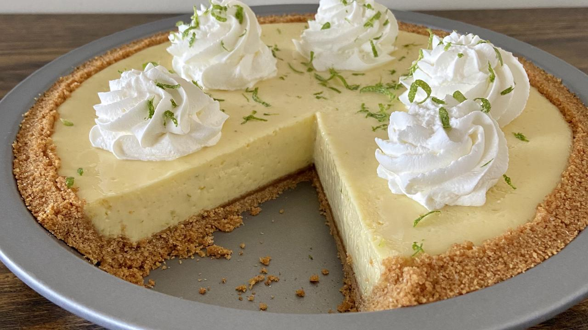

The egg whites and yolks are incorporated separately in key lime pies. The whites are used for the meringue topping, while the yolks are used in the filling.

The egg whites are separated from the yolks and whipped until they stiffen. Having any egg yolks in the mixture causes them not to stiffen. The whites are usually whipped with a whisk or a mixer. Cream of tartar is added to the mixture to speed up the whipping process. Cream of tartar is a byproduct of winemaking, remaining as a sediment after fermentation. It is an acid, and it boosts the strength of the air bubbles in the egg whites, slowing their natural tendency to deflate. Sugar is also added to the egg whites.

After the pie is baked, the meringue is spread on top. It is sometimes given a textured pattern for aesthetics. It is then either blowtorched or baked to create a nice golden-brown color. But be careful not to burn it!

Of course, meringue isn't the only possible topping for key lime pie. It is also common to add dollops of whipped cream on top of the pie.
The egg yolks are added as an ingredient in the filling of the pie. They are important to maintain the richness and silkiness of the filling.